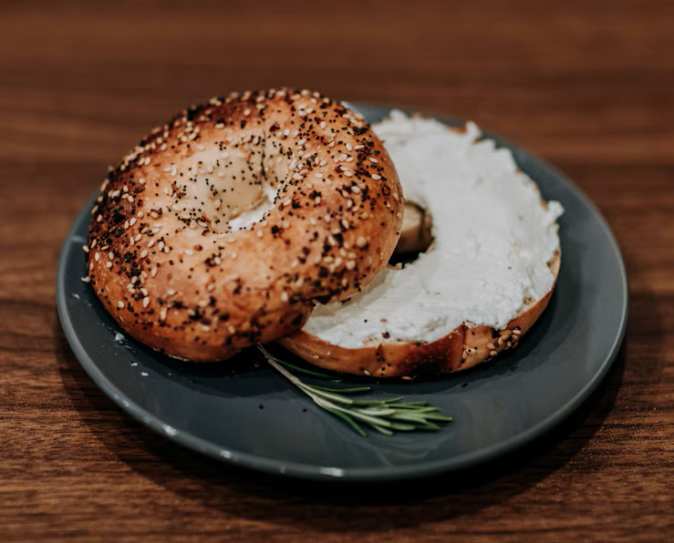
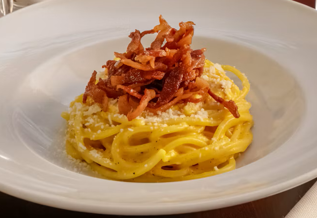
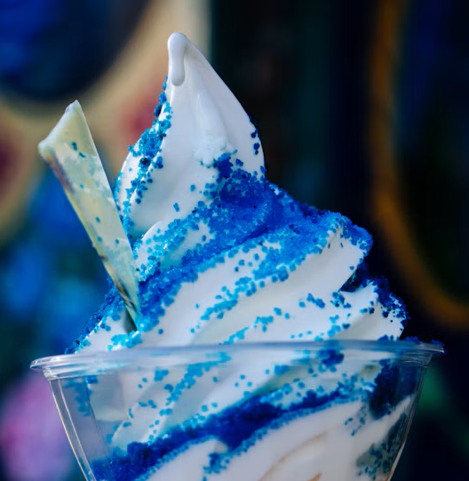

The Parlor
The Parlor is a restaurant concept currently in development. It mainly serves food from local fairs or puts a unique twist on more traditional meals.
Note: The currency used in the following menu presentation is Opalites, which will be represented by a lowercase "O" (o). This currency can be approximated by the following ratio: 1 Opalite = 5 Cents.
Menu
Opening Act (Appetizer):
- Bagel Toasts ... ... 120o

Main Attraction (Full Meal):
- Tangled Carbonara ... ... 200o

Bonus (Dessert):
- Marble Ice Cream ... ... 5o

Refreshments (Drinks):
- Water ... ... Free!
- Frozen Lemonade ... ... ... 3o
- Apple Soda ... ... ... 4o
- Strawberry Smoothie ... ... 5o
- Banana Split Shake ... ... 8o
Would you like to learn more? Below is a list ranking the 21 most well-known foods sold at fairs:
21 Classic Fair Foods, Ranked Worst To BestReturn To Top